A desktop interface for Pi
Pi-Vis runs the same Pi binary you use in the terminal — same sessions, same extensions, same config — and puts a window around it: a transcript you can actually scroll, a real diff viewer, and as many sessions as you have work.
curl -fsSL https://raw.githubusercontent.com/rsingapuri/pi-vis/main/scripts/install.sh | bash
Apple Silicon macOS · MIT licensed · Needs a Pi install

- No second agent loop The app never talks to a model itself.
- No accounts, no server A local shell around your existing Pi install.
- No forked config Pi's extensions, skills, and settings are the source of truth.
Why this exists
Pi is deliberately small: a minimal harness where extensions do the heavy lifting. That philosophy is easy to lose the moment someone builds a GUI for it — most agent frontends bring their own agent loop, their own config, and their own opinions.
Pi-Vis tries to be the boring alternative. Every session runs the
real, unmodified Pi agent in its own isolated process, and the
app stays out of the loop: prompts, tools, compaction, and
extensions all behave exactly as they do in your terminal. If an
extension opens a dialog, sets a status line, or draws a whole
TUI panel, it renders in the app. Quit Pi-Vis and your sessions
are still plain files in ~/.pi/agent/sessions,
resumable from the TUI.
The GUI adds what a terminal can't do well: scrolling up while the agent streams, expanding an earlier input or a collapsed tool output without losing your place, reviewing a large diff, and keeping several sessions going at once.
Most of the job is reading diffs
Supervising an agent mostly means reviewing what it changed, so the diff viewer is built for that. It compares the working tree against HEAD or any branch, shows changes, and allows searches across the diff. It holds up at real window sizes: side-by-side when there's room, automatically unified when there isn't, with long lines wrapping instead of scrolling sideways — hide the file tree and a half-width window next to your IDE still reads fine.
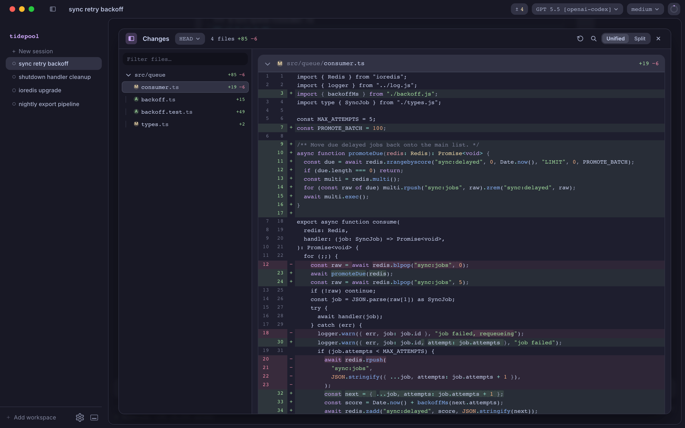
Every branch of the conversation
Pi sessions are trees, not lines — every fork and abandoned
attempt is still there. /tree shows the whole thing,
and branches can be labeled and switched into quickly.
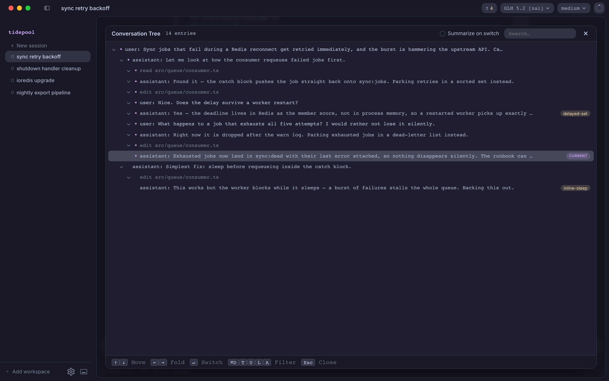
Sessions in parallel
Each session is its own Pi process. Run several across multiple workspaces, switch between them while they stream, and see at a glance which agents are working and which are waiting on you.
A worktree per session
Optionally give a session an isolated git worktree on a fresh branch, created before the first prompt — so parallel agents never step on each other, or on your working tree.
Extensions, unchanged
Extension dialogs, toasts, status bar segments, even full TUI panels render right in the app. If it works in the Pi terminal, it works here — nothing to reinstall, port, or configure.
Nine built-in themes
Dark and light, with syntax highlighting that follows the UI theme. Adding your own is one JSON file dropped into a folder.
{kind=link}
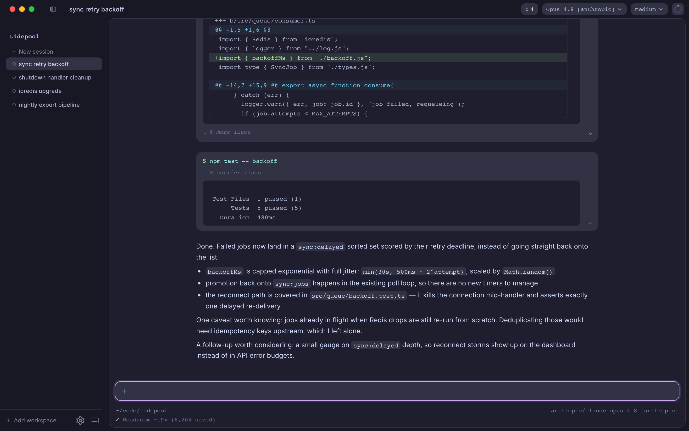
{kind=link}
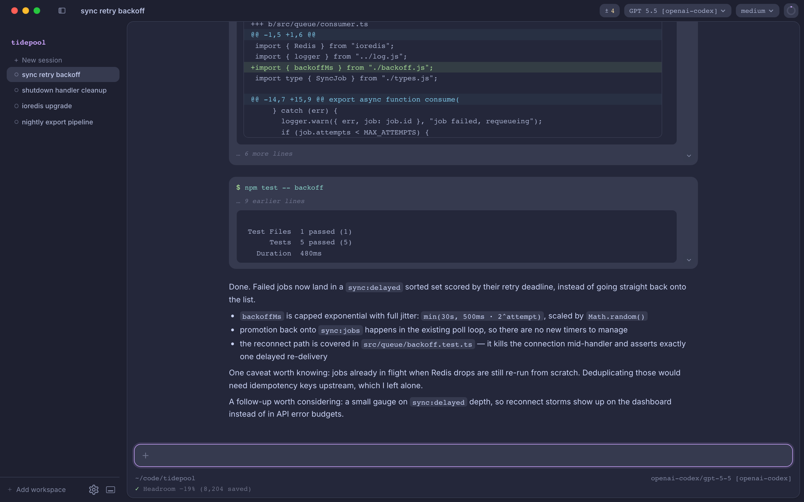
{kind=link}
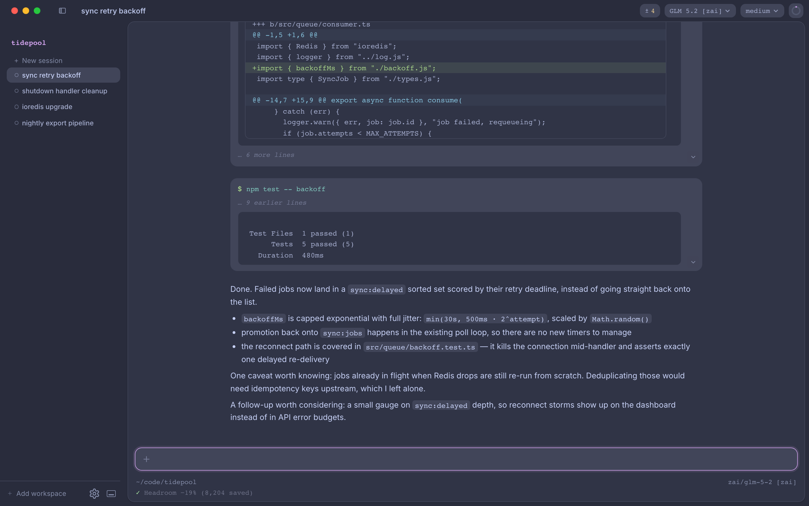
{kind=link}
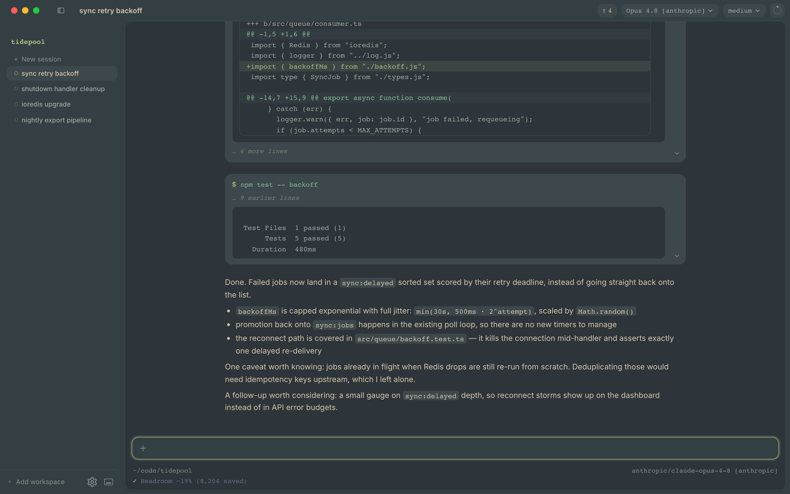
{kind=link}
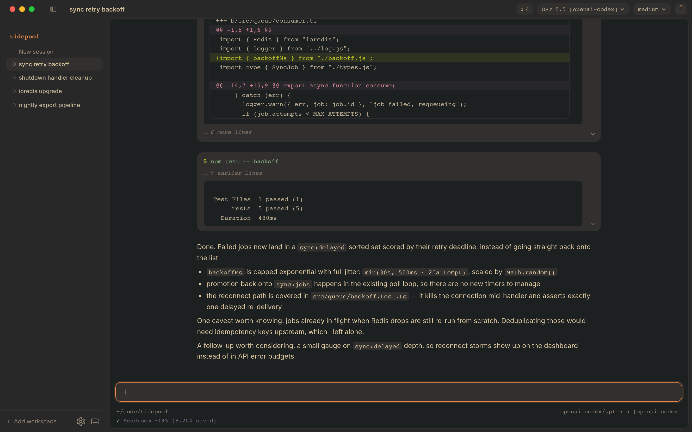
{kind=link}
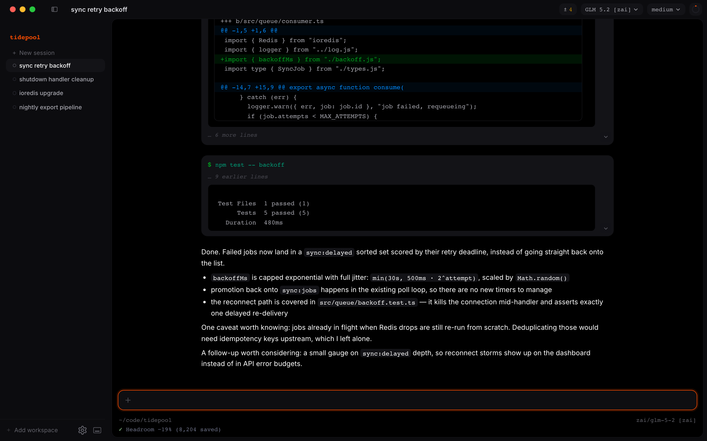
{kind=link}
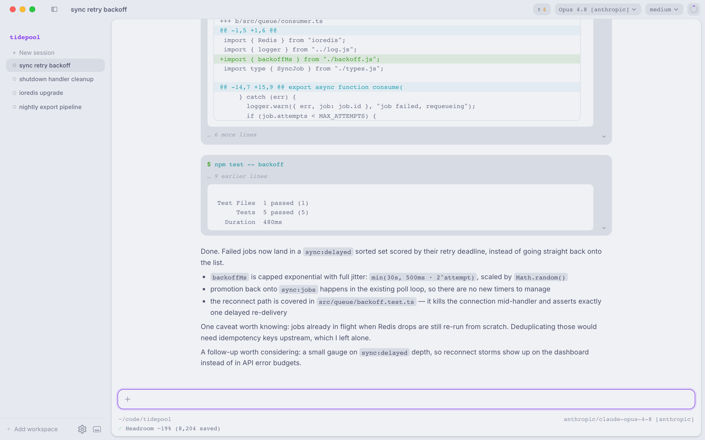
{kind=link}
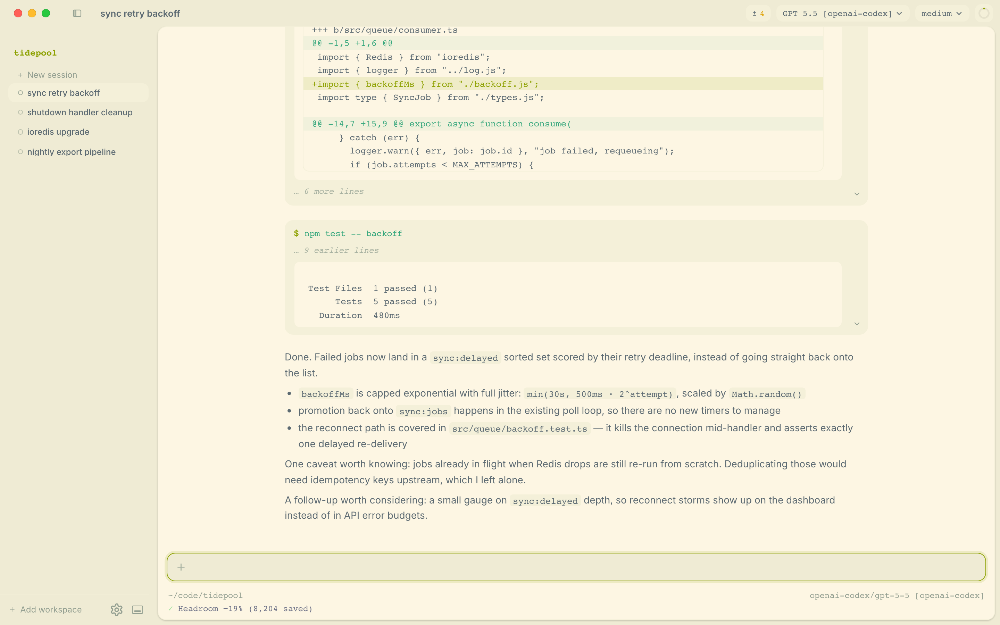
{kind=link}
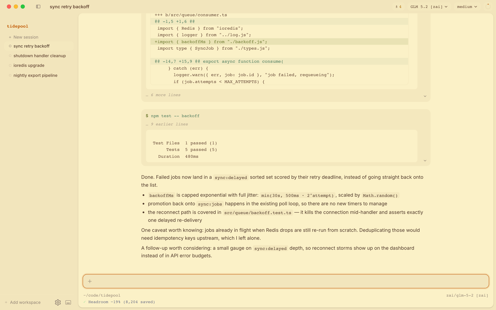
Install
-
Install Pi, if you haven't:
npm i -g --ignore-scripts @earendil-works/pi-coding-agent -
Install Pi-Vis:
curl -fsSL https://raw.githubusercontent.com/rsingapuri/pi-vis/main/scripts/install.sh | bashOr grab the
.dmgfrom GitHub Releases. The installer downloads the latest notarized build into/Applications; releases are Apple Silicon only (Intel Macs can build from source).